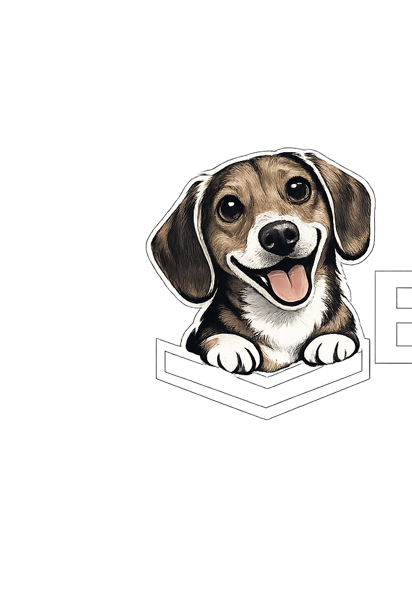

Cars in view — now
—

BilboDataWe read New York's own traffic cameras in real time — counting and measuring the vehicles on every block: how many, what type, how big. The traffic, never the people — and, by design, never followed from one camera to the next.
| Intersection | Signature | Sedan | SUV/van | Pickup+ | Truck | Bus | Seen |
|---|
| Intersection | Vehicles | Passes |
|---|
| Intersection | Cars | Trucks | Buses | Moto | mi |
|---|
Bilbo reads every corner and writes down what changed — surges, quiet streets, heavy-vehicle clusters, the busiest blocks on record. Plain-English dispatches, ranked by surprise, every one traceable back to the count.
Every reading on this site comes from a vision model — and this is where that model goes to school. A perpetual loop trains it on thousands of archived NYC camera frames, grades each generation on a camera it has never seen, and drills its worst mistakes. Telemetry published live from the training rig.
Truth about a city isn't neutral, and it isn't free-floating. It's produced — by whoever owns the instruments that measure the world. Own the instrument, own the truth. Bilbo Data takes one of those instruments out of the private room and hands it to everyone.
If you hold a gun and I hold a gun, we talk about the law.
If you hold a knife and I hold a knife, we talk about rules.
If we come empty-handed, we talk as equals.
But if you hold a gun and I hold nothing — there is no conversation.
— Michel FoucaultA handful of institutions are "charged with saying what counts as true" about the city. The state runs the cameras. Palantir and its cousins run the analysis. The facts get produced inside rooms you'll never enter, then handed down to you as objective. The instrument is the power.
"Truth is a thing of this world… Each society has its régime of truth… the techniques and procedures accorded value in the acquisition of truth; the status of those who are charged with saying what counts as true." — Michel Foucault, Truth and Power
Bilbo Data breaks that monopoly. The same class of instrument — a full Palantir-style eye on the streets, the same computer vision — pointed at the same city. The only difference is who holds it: everyone. Open data, open method, public the second it exists. Not a gentler tool, not a watered-down one — the real thing, taken out of the private room and put in the street.
Both companies reached into the same book. They chose opposite ends of it.
The palantíri were the elves' crystal spheres that let you see across the world. By the Third Age they belonged to the powerful — Stewards, wizards, the Dark Lord — and they corrupted nearly everyone who looked in: Denethor to despair and suicide, Saruman to ruin. Even Sauron couldn't make the Stone lie; he could only show selective truths. An all-seeing instrument that rots the hand that holds it.
In the Ring-verse power is rationed to the elite — three rings for the Elven-kings, seven for the Dwarf-lords, nine for Mortal Men, one for the Dark Lord. Then a hobbit, the smallest and most overlooked creature alive, ends up holding the master ring itself — carries the ultimate instrument of power and stays himself, and becomes the first bearer ever to give it up freely.
That's the whole thesis: same seeing-stone, opposite hands. The instrument only kings and dark lords were meant to hold, put in the paws of the one creature that doesn't get ruled by it. And — literally — Bilbo is my girlfriend's dog: a small creature, no one's idea of a hero, who ends up carrying something the powerful would rather keep for themselves. Made anonymously, in New York.
Bilbo began as a counter — how many cars cross a corner each minute — and it still is one. It also measures: each camera learns its own scale from the typical car, so a vehicle isn't just counted but sized and typed — sedan, van, truck, bus. What it deliberately does not do is follow one car from camera to camera. A count throws every car into one grey heap; we leave it there, on purpose.
That restraint is the whole point, and it's exactly why the rules below matter. We built cross-camera re-identification — a color, a look, a route drawn across the map — then measured it honestly and found it barely better than a guess at this resolution. So we took it out. The eye that recognizes is the more powerful eye; the discipline is in what we refuse to let it see, even when we could.
An operating system for the world's most contested eight feet of asphalt. Deployed at scale on President Street.
Real-time detection of the delivery van that stopped exactly where it shouldn't. Mission-critical. Hydrant-adjacent.
When the bell rings, the corridor changes character. Bilbo sees the shift before the crossing guard does.
Every bus, every block, timed camera-to-camera. Grandiose name. Humble mission. Counts the B44.